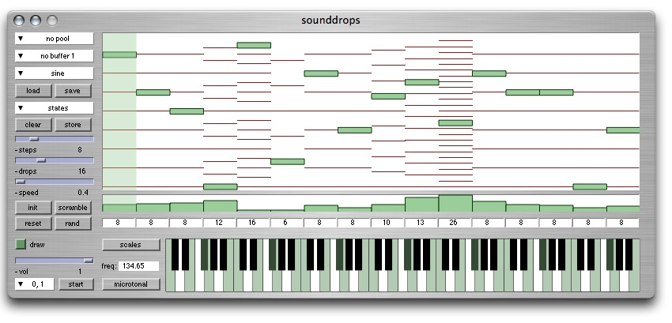

ixiQuarks : Sounddrops

| Sounddrops |
|
The Sounddrops instrument is a polyrhythmic sequencer where each track (the drop) triggers a sound when it falls to the ground. Unlike the PolyMachine, all the drops are run by the same tempo clock, but each drop can have different step count on the way down, thus getting different speed from the others. The step count is crucial for creating interesting polyrhythms or phasing patterns. Using the arrow-keys or clicking in the drop-window, you cal select a track (drop) and assign new properties to it, such as sound, steps, volume, etc. To select ALL drops, use the key combination CTRL+A and all drops will be selected. The draw radio button allows you to see the steps the drops take, but it does not change anything in the functionality of the instrument. You can choose how many drops you use, the default is 16. |